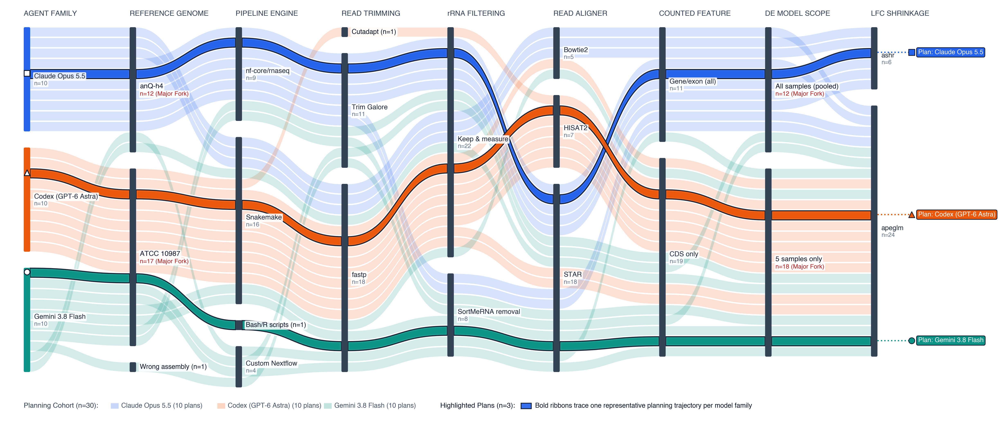
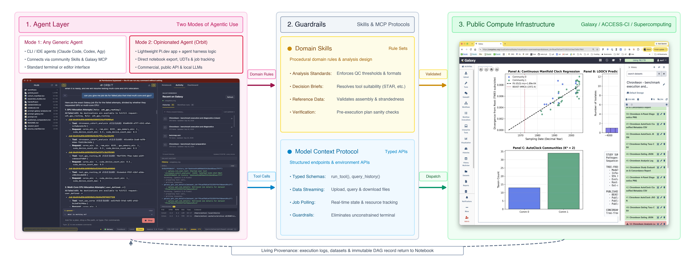
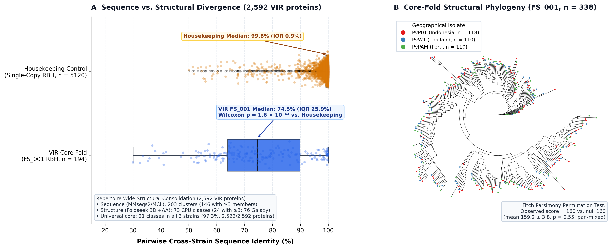

Autonomous coding agents make data analysis effortless, but running them in isolated local terminals threatens to flood biology with plausible, unrepeatable results. Grounding agents in free public supercomputing (UseGalaxy.org) turns ephemeral prompts into permanently auditable workflows—catching silent errors in published papers while unlocking supercomputer-scale discovery for any lab.
Given the same bacterial RNA-seq study, 29 of 30 frontier agents diverged from the paper, altering which toxin genes were detected and leaving 26 unversioned glue scripts.
Connecting CLI agents or the Orbit workbench to Galaxy routes heavy jobs onto national ACCESS-CI supercomputers while recording every step in a shareable notebook.
Provenance exposed that the Paper2Agent benchmark ran on a 1,000-cell tutorial file instead of the 5,613-cell atlas it cited (tripling accuracy once restored on Galaxy).
Agents orchestrated GPU protein models to unify 2,592 P. vivax malaria antigens across continents and dated 42 pathogen epidemics in seconds per alignment.
Over the past year, students, postdocs, and PIs across our labs—including hardened AI skeptics—started opening command-line coding agents, got hooked, and stopped analyzing data any other way.
Watching an autonomous agent work in a local terminal is both thrilling and terrifying. Analyses that used to take two weeks now run from a single prompt. The terror sets in five minutes later when you ask: what did the agent actually do? In a local shell, an unsupervised agent improvises pipelines from whatever is installed on your laptop, writes throwaway glue scripts, hits a hardware wall the moment a job needs 64 GB of RAM or an A100 GPU, and leaves zero verifiable provenance when the terminal closes.
In a new collaboration across Johns Hopkins, Penn State, Temple, TACC, and the University of Freiburg (Verifiable Agentic Science on Public Infrastructure), we tested what happens when coding agents collide with real biological data—and how grounding them in free public cyberinfrastructure (UseGalaxy.org and national ACCESS-CI supercomputers) makes agentic science both verifiable and far more powerful.
We started with a simple test: we handed a published RNA-seq study of the foodborne pathogen Bacillus cereus (Vyklická et al., 2025)—which tested how glucose regulates diarrheal enterotoxins—to 30 independent coding agents (10 Claude Opus 5.5, 10 OpenAI Codex, and 10 Google Gemini 3.8 Flash via Antigravity) and asked each for a replication plan.
Because the published methods had two real-world ambiguities (a suppressed RefSeq assembly for B. cereus ATCC 10987 after reclassification as B. pacificus, and whether DESeq2 pooled all 19 screen libraries or only the 5 focal samples), 29 of the 30 agents diverged from the paper, splintering into 18 distinct pipelines (and 11 incompatible designs across the five steps that alter gene counts and $p$-values; Fig. 1).

When one agent from each family executed its plan locally, all three recovered the headline biology (glucose represses pore-forming toxin nheB and induces entFM). Beneath the surface, however, aligning to B. pacificus erased an actively transcribed toxin (cytK2, ~800 read pairs/library on ATCC 10987), and the three agents left behind 26 custom glue scripts (>1,200 lines of unversioned code) that couldn't be audited or run anywhere else.
In agent-driven science, provenance isn't a nice-to-have convenience—without it, an agent's output is scientifically unverifiable. In our architecture (Fig. 2), any command-line agent—or Orbit, our desktop workbench built on Pi.dev—connects to Galaxy through curated domain skills and a typed Galaxy MCP server.

Running on this Galactic plane gives agents three things local terminals cannot: (1) free national supercomputing (CPUs and GPUs on ACCESS-CI without giving agents raw SSH access); (2) automatic provenance (every input, tool version, and parameter locked into an immutable history and notebook); and (3) versioned User-Defined Tools (UDTs) in place of disposable local scripts.
Across 48 biological analyses, mandatory provenance acted like a forensic microscope on the published literature:
- Catching bad bacterial pipelines before launch (Bacillus cereus):
In Galaxy, inspecting the agent's proposed workflow immediately exposed that it had chosen
HISAT2—a eukaryotic spliced aligner—for an intronless bacterium, and Galaxy’s workflow editor flagged atximportcollection mismatch before any jobs launched. Switching toKallistoagainst the 5,472 coding loci finished in 38–60 seconds per library and reproduced the published toxin profile ($r = 0.9622$). - The "agent reproducibility" benchmark that dropped 82% of its own data:
The recent Paper2Agent study (Miao et al., 2026) wrapped the spatial transcriptomics tool
TISSUEinto an agent and cited a 5,613-cell mouse cortex scRNA-seq reference archive (Dataset 15). Our provenance audit uncovered an ironic twist: their benchmark figure had actually been generated from a 1,000-cell tutorial demo file bundled inside the GitHub repo! Dropping 82% of the reference cells left predicted Acta2 expression nearly uncorrelated with ground truth ($r = 0.0861$). RunningTISSUEon UseGalaxy.org reproduced their 1,000-cell tutorial output to floating-point precision ($r = 1.0000$) and scaled to all 5,613 reference cells—tripling prediction accuracy to $r = 0.2553$. - Unstated statistical pooling & annotation traps:
In a 30-sample antifungal time-course of Aspergillus fumigatus (Hokken et al., 2019), standard pairwise
DESeq2missed 39% of published DEGs until our provenance audit spotted identicalbaseMeanvalues across all timepoints—proving the authors had fitted one pooled 30-sample model (25 residual d.f. to stabilize dispersion). Switching to the pooled design matched their gene counts within 0.3–1.3% ($r \ge 0.9996$). Similarly, provenance audits resolved unmerged replicate rows in Anopheles gambiae ATAC-seq (Ruiz et al., 2021; 90.7–93.2% raw peak recovery) and fixed a non-modelAAELmitochondrial gene prefix in Aedes aegypti scRNA-seq (Wang et al., 2024) that caused genericScanpyQC to report zero mitochondrial reads.
Beyond auditing past work, Orbit and free public GPUs/CPUs power large-scale biological discovery:
- Unifying malaria surface antigens across continents:
Each Plasmodium vivax genome encodes ~1,000 hypervariable VIR surface proteins that fall into the sequence twilight zone ($\le 30\%$ identity), fracturing 2,592 proteins from Indonesia, Thailand, and Peru into 203 sequence clusters.
By registering 10 UDTs on UseGalaxy.org to run
ProstT5,Foldseek,FoldMason, andIQ-TREE 3on ACCESS-CI A100 GPUs (Fig. 3), Orbit collapsed the repertoire into 73–76 structural classes and showed that over 97% of all VIR proteins belong to 21 ancestral folds shared across all three continents ($p = 0.55$ for geographic mixing). - Dating 42 pathogen epidemics in seconds:
Wrapping
ChronAeonas Galaxy UDTs, Orbit dated 42 published viral and bacterial BEAST benchmark alignments (Ebola, SARS-CoV-2, Zika, Dengue, Mpox, Y. pestis) in seconds per cohort instead of days of MCMC sampling, matching reference Bayesian emergence dates on 64.1% of scored outbreaks (median error $0.40$ years post-1980).

When coding agents run in isolated local shells, they generate disposable scripts and unverifiable claims. When we ground them in shared public infrastructure, every prompt produces a permanent, auditable scientific record—and every custom wrapper becomes a community asset.